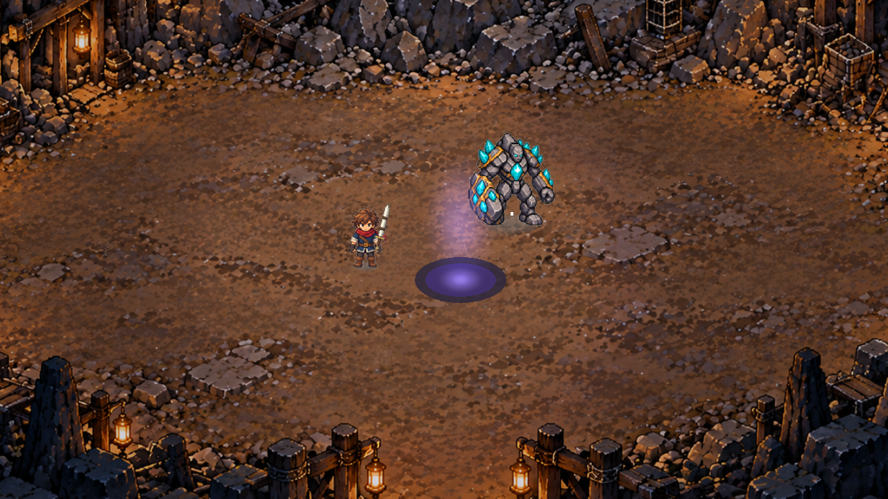
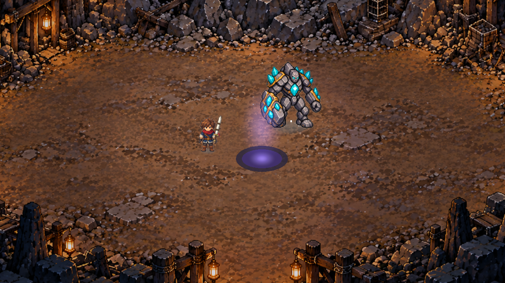

골렘 +25% · 혈월의 기사 / 탑의 수문장 / 마왕 +15%용사 크기와 보스방 카메라는 동일하게 두고 비교했어요.


실제 Java 렌더러 · 1280×720 · 보스방 기본 카메라 100%. 비교를 위해 배우의 위치·상태를 고정한 장면이며 실제 전투 녹화는 아닙니다. 발 위치·피격 판정·공격 사거리와 바닥 위험 범위는 유지합니다. 몬스터 원본 PNG는 변경하지 않았습니다.
적용·검증 기록 · 이전 용사·잡몹 확대 비교